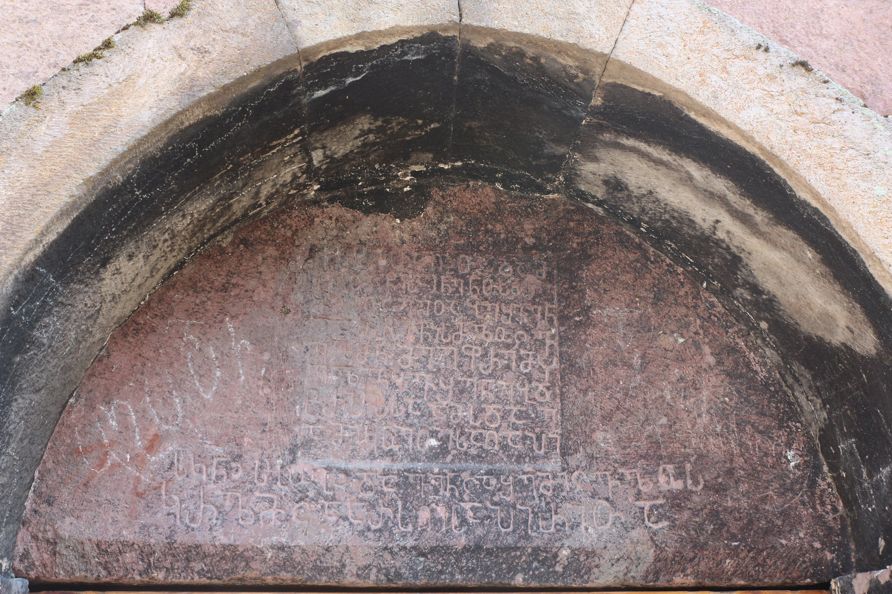

აგარის (ურვალის) სატრაპეზოს წარწერაAgara (Urvali) inscription of the refectory
აგარის (ურვალის) სატრაპეზოს წარწერა
Agara (Urvali) inscription of the refectory
შინაარსი / Summary
მოსახსენებელი Memorial
ბიბლიოგრაფია Bibliography
კრიტიკული გამოცემა Interpretive Edition
ს(ა)ხ(ე)ლ(ი)თა ღ(მრთისა)ჲთა და მ(ეო)ხ(ე)ბ(ი)თა წ(მიდ)ისა ი(ოვა)ნე ნ(ა)თ(ლი)სმცე -
მლ(ი)ს(აჲ)თა ე(რისთავთ)ე(რისთავ)თა ბეშქენ
და მ(უ)რვ(ა)ნის მლოცვ -
5ელმ(ა)ნ მე ეფრემ ჴ -
ელვყ(ა)ვ შენებ(ა)დ
ტრ(ა)პ(ე)ზსა ამ(ა)ს და გ -
ამიკუეთეს აღაპი
ს(აუ)კ(უ)ნ(ო)ჲ ს(ამე)ბობ(ა)ჲ და ვინცა შემიცვ(ა)ლოს
10კრ(უ)ლმცა არს ღ(მრთ)ისა პირითა
დიპლომატიური გამოცემა Diplomatic Edition
ႱႾႪႧႠ ႶჂႧႠ ႣႠ ႫႾႡႧႠ ႼႨႱႠ ႨႬႤ ႬႧႱႫႺႤ
ႫႪႱႧႠ ႤႤႧႠ ႡႤႸႵႤႬ
ႣႠ ႫႰႥႬႨႱ ႫႪႭႺႥ
5ႤႪႫႬ ႫႤ ႤႴႰႤႫ Ⴤ
ႤႪႥႷႥ ႸႤႬႤႡႣ
ႲႰႮႦႱႠ ႠႫႱ ႣႠ Ⴂ
ႠႫႨႩႳႤႧႤႱ ႠႶႠႮႨ
ႱႩႬჂ ႱႡႭႡჂ ႣႠ ႥႨႬႺႠ ႸႤႫႨႺႥႪႭႱ
10ႩႰႪႫႺႠ ႠႰႱ ႶႨႱႠ ႮႨႰႨႧႠ

აგარა (ურვალის)
{'default': 'ღმრთის სახელით და წმინდა იოანე ნათლისმცემლის მეოხებით ერისთავთ-ერისთავთა ბეშქენ და მურვანის მლოცველმა მე, ეფრემ, ჴელვყავ აშენება ამ ტრაპეზისა.\n დამიდგინეს საუკუნო აღაპი სამებობა დღეს და ვინც შემიცვალოს, კრულმცა არს ღმრთის პირით. In the name of God and aid of John the Baptist Beshken the Eristavt-eristavi and I, Ephrem prayer for Murvan, built this refectory. They established the agape on the day of the holy trinity for me and if somebody will change it, let him be cursed by God.In the name of God and aid of John the Baptist Beshken the Eristavt-eristavi and I, Ephrem prayer for Murvan, built this refectory. They established the agape on the day of the holy trinity for me and if somebody will change it, let him be cursed by God.'}
{'default': 'ურავლის აგარაში მოზრდილი სამონასტრო კომპლექსი ყოფილა, შემორჩენილ ნაგებობათაგან მნიშვნელოვანია ორი - ეკლესია და\n სატრაპეზო. ორივეზე მოიპოვება ასომთავრული საამშენებლო წარწერები. ეკლესიის წარწერა X საუკუნისაა, ხოლო სატრაპეზოსი - XI საუკუნისა.\n წარწერა საინტერესოა ჯაყელთა საგვარეულოს წარმომადგენელთა - ბეშქენისა და მურვანის - მოხსენიების გამო, რომლებიც, ვალერი სილოგავას აზრით, შესაძლებელია, გავაიგივოთ\n კორიდეთის ოთხთავის მინაწერ საბუთებში დასახელებულ ბეშქენსა და მურვანთან. ისინი ძმები უნდა იყვნენ. ერთი თუხარისის, ხოლო მეორე - ყველის ერისთავია. ყველა მონაცემით,\n მათ შორის, წარწერის პალეოგრაფიული ნიშნებით (კლასიკური კიდურწაისრულობა), ისინი XI ს-ის მოღვაწეებია - შუა ხანების ან მეორე ნახევრისა. ამიტომ აგარის მონასტრის სატრაპეზოც\n ამ დროით უნდა დათარიღდეს.\n წარწერის მიხედვით, ბეშქენ და მურვან ერისთავთ ერისთავთა მლოცველ ეფრემს აგარის მონასტრისათვის აუშენებია სატრაპეზო (იგივე „ტრაპეზი“, როგორც ეს წარწერაშია). მლოცველი\n აქ არ ნიშნავს, რომ წარწერაში დასახელებულმა მაღალი რანგის მოხელეებმა იგი აგარაში დაადგინეს. ეფრემი მხოლოდ მათთან დაახლოებული სასულიერო პირია, რომელიც მათი\n მლოცველია, თავის ლოცვებში მომხსენებელია. ეს მეტი სიცხადით წარწერის ტექსტის მომდევნო ნაწილიდან ჩანს, სადაც ეფრემი წერს, რომ „გამიკუეთეს აღაპი საუკუნოჲ“, ე. ი.\n მისთვის აღაპიც დაუდგენიათ სამებობა დღეს (აღდგომის მომდევნო კვირის, ანუ ბრწყინვალე შვიდეულის სამშაბათს) სატრაპეზოს აშენებისათვის. მაშასადამე, იგი რომ ბეშქენ და მურვან\n ერისთავთ ერისთავთა მწირველი იყოს, მათი მოხსენიების კონკრეტულ დღესაც დაასახელებდა, ისე როგორც ეს აღნიშნა თავისი მოხსენიების დღის შესახებ.'}
<div type="edition" xml:lang="ka" ana="mtavruli" xml:space="preserve">
<ab>
<lb n="1"/><w lemma="ქრისტე"><expan><abbr>ქ</abbr><ex>რისტ</ex><abbr>ე</abbr></expan></w>
<w lemma="განსუენება"><expan><abbr>გა</abbr><ex>ნ</ex><abbr>ო</abbr><ex>ჳ</ex><abbr>ს</abbr><ex>უ</ex><abbr>ენე</abbr></expan></w>
<w lemma="სულ">სოჳ<lb n="2" break="no"/>ლსა</w>
<name nymRef="ვაჩა">ვაჩაჲს<lb n="3" break="no"/>ასა</name>
<name nymRef="გურა"><expan><abbr>გო</abbr><ex>ჳ</ex><abbr>რაჲ<lb n="4" break="no"/>სასა</abbr></expan></name>
<name nymRef="მირა"><expan><abbr>მ</abbr><ex>ი</ex><abbr>რა</abbr><ex>ჲ</ex><abbr>ს</abbr><ex>ა</ex><abbr>ს</abbr><ex>ა</ex></expan></name>
</ab>
</div>